Chapter 6 Logistic Regression: The Space Shuttle Challenger
There are many investigations where a researcher is interested in developing a regression model when the response variable is dichotomous (has only two categories). Dichotomous responses can be represented with binary data (data with values of only zero or one). Logistic regression is used to examine the relationship between one or more explanatory variables and a binary response variable.
In this chapter, we will look at several studies, including O-ring failure data provided by the National Aeronautics and Space Administration (NASA) after the space shuttle Challenger disaster, in order to introduce the following logistic regression techniques:
- Calculating and interpreting the logistic regression model
- Using the Wald statistic and likelihood ratio tests to determine the significance of individual explanatory variables
- Calculating the log-odds function and maximum likelihood estimates
- Conducting goodness-of-fit tests to evaluate model appropriateness
- Assessing regression model performance by looking at a classification table, showing correct and incorrect classification of the response variable
- Extending logistic regression to cases with multiple explanatory variables
6.1 Investigation: Did Temperature Influence the Likelihood of an O-Ring Failure?
On January 28, 1986, the NASA space shuttle program launched its 25th shuttle flight from Kennedy Space Center in Florida. Seventy-three seconds into the flight, the external fuel tank collapsed and spilled liquid oxygen and hydrogen. These chemicals ignited, destroying the shuttle and killing all seven crew members on board. Reports to President Reagan and videos of the event are available at the Kennedy Space Center website.*
Investigations showed that an O-ring seal in the right solid rocket booster failed to isolate the fuel supply. Figure 6.1 shows the space shuttle Challenger just after ignition with the fuel tank and two 149.16-foot-long solid rocket boosters. Figure 6.2 shows a diagram of a solid rocket booster. Because of its size, the rocket boosters were built and shipped in separate sections. A forward, center and aft field joint connected the sections. Two O-rings (one primary and one secondary), which resemble giant rubber bands 0.28 inch thick but 37 feet in diameter, were used to seal the field joints between each of the sections.
An O-ring seal was used to stop the gases inside the solid rocket booster from escaping. However, the cold outside air temperature caused the O-rings to become brittle and fail to seal properly. Gases at 5800 °F escaped and burned a hole through the side of the rocket booster.
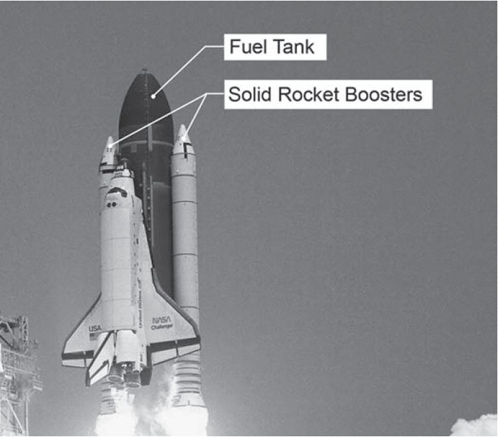
Figure 6.1: Picture of the space shuttle Challenger just after ignition. Each solid rocket booster had six O-rings, two at each field joint. The O-rings at the right aft field joint failed.
The Report of the Presidential Commission on the Space Shuttle Challenger Accident, also known as the Rogers’ Commission Report, states:
““O-ring resiliency is directly related to its temperature. . . . A warm O-ring that has been compressed will return to its original shape much quicker than will a cold O-ring when compression is relieved. . . . A compressed O-ring at 75 degrees Fahrenheit is five times more responsive in returning to its uncompressed shape than a cold O-ring at 30 degrees Fahrenheit. . . . At the cold launch temperature experienced, the O-ring would be very slow in returning to its normal rounded shape. . . . It would remain in its compressed position in the O-ring channel and not provide a space between itself and the upstream channel wall. Thus, it is probable the O-ring would not . . . seal the gap in time to preclude joint failure due to blow-by and erosion from hot combustion gases. . . . Of 21 launches with ambient temperatures of 61 degrees Fahrenheit or greater, only four showed signs of O-ring thermal distress: i.e., erosion or blow-by and soot. Each of the launches below 61 degrees Fahrenheit resulted in one or more O-rings showing signs of thermal distress.”\(^2\)
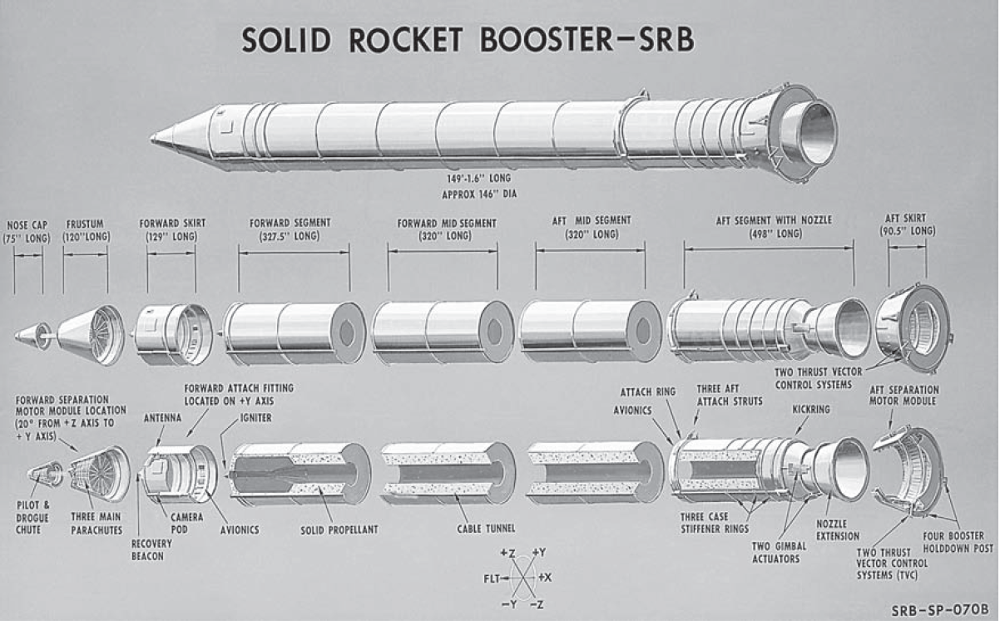
Figure 6.2: Diargam of a solid rocket booster.
A lamentable aspect of this disaster is that the problem with the O-rings was already understood by some engineers prior to the Challenger launch. In February 1984, the Marshall Configuration Control Board sent a memo about the O-ring erosion that occurred on STS 41-B (the 10th space shuttle flight and the 4th mission for the Challenger shuttle). Messages continued to increase in intensity, as evidenced by a 1985 internal memo from Thiokol Corporation, the company that designed the O-ring. Employees from Thiokol wrote the following to their Vice President of Engineering: “This letter is written to ensure that management is fully aware of the seriousness of the current O-Ring erosion problem in the SRM joints from an engineering standpoint.”\(^3\)
With the temperature on January 28, 1986, expected to be 31°F, Thiokol Corporation recommended against the Challenger launch. However, this flight was getting significant publicity because a high school teacher, Christa McAuliffe, was on the flight. The flight had already been delayed several times, and there was no quick solution to the O-ring concern. The engineers were overruled, and the decision was made to go ahead with the launch. The eventual presidential investigation stated, >“The decision to launch the Challenger was flawed. Those who made that decision were unaware of the recent history of problems concerning the O-rings and the joint and were unaware of the initial written recommendation of the contractor advising against the launch at temperatures below 53 degrees Fahrenheit and the continuing opposition of the engineers at Thiokol after the management reversed its position. They did not have a clear understanding of Rockwell’s concern that it was not safe to launch because of ice on the pad. If the decision makers had known all of the facts, it is highly unlikely that they would have decided to launch 51-L on January 28, 1986.”\(^4\)
It seems that even though some engineers did comprehend the severity of the problem, they were unable to properly communicate the results. Prior to the ill-fated Challenger flight, the solid rocket boosters for 24 shuttle launches were recovered and inspected for damage. Even though O-ring damage was present in some of the flights, the O-rings were not damaged enough to allow any gas to escape. Since damage was very minimal, all 24 prior flights were considered a success by NASA.
- Flight 4 is a missing data point because the rockets were lost at sea.
Table 6.1 shows the temperature at the time of each launch and whether any damage was visible in any of the O‑rings. In this chapter, we will define a successful launch as one with no evidence of any O‑ring damage. In Table 6.1, Successful Launch is a categorical variable, with 0 representing a launch where O‑ring damage occurred and 1 indicating a successful launch with no O‑ring damage. Throughout the rest of this investigation, the relatively small data set in Table 6.1 will be used to demonstrate techniques that can be used to determine if the likelihood of O‑ring damage is related to temperature.
Activity: Describing the Data
Based on the description of the Challenger disaster O‑ring concerns, identify which variable in the space shuttle data set in Table 6.1 should be the explanatory variable and which should be the response variable.
Imagine you were an engineer working for Thiokol Corporation prior to January 1986. Create a few graphs of the data in Table 6.1. Is it obvious that temperature is related to the success of the O‑rings? Submit any charts or graphs you have created that show a potential relationship between temperature and O‑ring damage.
In this chapter, we will develop a regression model using a binary response variable, Successful Launch. For the space shuttle data set, y = 1 represents a successful flight with no O-ring damage and y = 0 represents a flight with some O-ring damage. Binary response data occur in many fields; for example, we may want to know
- whether a disease is present or absent
- whether or not a person is a good credit risk for a loan
- whether or not a high school student should be admitted to a particular college
- whether or not an individual is involved in substance abuse
The next section describes why the least squares regression model is not appropriate when the response is binary. Logistic regression is used to examine the relationship between one or more explanatory variables and a binary response variable. Like other regression models, logistic regression models often have explanatory variables that are quantitative, but they can be categorical as well
6.2 Review of the Least Squares Regression Model
In Chapters 2 and 3, you saw that the ordinary least squares regression model has the form \[\begin{align} y_i &= \beta_0 + \beta_1 x_i + \epsilon_i \quad\text{for } i = 1, 2, 3, \dots, n \tag{6.1} \end{align}\]
where \(n\) is the number of observations, \(y_i\) is the \(i\)th value of a , \(\beta_0\) and \(\beta_1\) are regression coefficients, \(x_i\) is the \(i\)th value of the explanatory variable, and \(\epsilon_i\) represents normally distributed errors with a constant variance. Equation (6.2) states that the mean response (the expected response at each particular \(x_i\)) is equal to the linear predictor \(\beta_0 + \beta_1 x_i\) for each observed value \(x_i\):
\[\begin{align} E(Y_i \mid x_i) &= \beta_0 + \beta_1 x_i \quad\text{for } i = 1, 2, 3, \dots, n \tag{6.2} \end{align}\]
where \(\beta_0\) and \(\beta_1\) are parameters that can be estimated with sample data. In addition to assuming that the regression model has a linear predictor, we assume that the error terms in the least squares regression model are independent and follow the normal distribution with a zero mean and a fixed standard deviation:
\[\begin{align} \epsilon_i &\overset{\mathrm{iid}}{\sim} N(0, \sigma^2) \quad\text{for } i = 1, 2, 3, \dots, n \tag{6.3} \end{align}\]
Equation (6.3) states that each independent and identically distributed error term follows a normal probability distribution that is centered at zero and has a constant variance.
NOTE When there is only one explanatory variable, as in Equation (6.1), ordinary least squares regression is often called simple linear regression. As shown in Chapter 3, the model is called least squares regression because the line minimizes the sum of the squared residuals (the difference between an observed value and the expected response). Least squares estimates for \(\beta_0\) and \(\beta_1\) (represented as \(b_0 = \hat\beta_0\) and \(b_1 = \hat\beta_1\)) can be calculated even when the normality and equal variance assumptions are violated. However, these assumptions about the error terms are needed to conduct hypothesis tests and construct confidence intervals for \(\beta_0\) and \(\beta_1\).
6.3 The Logistic Regression Model
When the response variable is binary, the response is typically defined as a probability of success, instead of 0 or 1. For example, in Question 3, when the temperature is 60°F, the least squares regression line estimates that the probability of a successful launch is 0.338. The expected response at each particular \(x_i\) is defined as
\[\begin{align} \pi_i &= P(Y_i = 1) = \text{probability that a launch has no O-ring damage at temperature } x_i \notag \\ &= E(Y_i \mid x_i) \notag \\ &= \beta_0 + \beta_1 x_i \quad \text{for } i = 1,2,3,\dots,n \tag{6.4} \end{align}\]
While the linear model (\(\beta_0 + \beta_1 x_i\)) in Equation (6.4) is simple, it is not appropriate to use, since probabilities must be between 0 and 1. For example, with a temperature value \(x_i = 50\), the least squares regression model in Question 3 would predict a probability of \(-0.036\). In order to restrict the predictions to values between 0 and 1, an S-shaped function called the log-odds function will be used.
Logistic regression uses the following model to fit an S-shaped relationship between \(\pi\) and \(x\):
\[\begin{align} \ln\bigl(\frac{\pi_i}{1 - \pi_i}\bigr) &= \beta_0 + \beta_1 x_i \tag{6.5} \end{align}\]
where ln represents the natural log, \(\beta_0\) and \(\beta_1\) are regression parameters, and \(\pi_i\) is the probability of a successful launch for a given temperature (\(x_i\)). The ratio \(\pi/(1 - \pi)\) is called the odds, the probability of success over the probability of failure. Thus, the function ln[\(\pi/(1 - \pi)\)] is called the log-odds of \(\pi\) or the logistic or logit transformation of \(\pi\).* Figure 6.3 shows both the least squares regression model and the logistic regres- sion model for the space shuttle data.
MATHEMATICAL NOTE: In Chapter 6, the odds of an outcome are defined as \(\pi/(1 - \pi)\), the probability of a success (no O-ring damage) over the probability of a failure (O-ring damage). For example, if a computer randomly selects a day of the week, the odds of selecting Saturday (Saturday is considered a success) are 1 to 6, since
\[\begin{align} \text{odds} = \frac{\pi}{1 - \pi} = \frac{1/7}{(1 - (1/7))} = \frac{1}{6}. \notag \end{align}\]
Similarly, the odds are 6 to 1 against Saturday being selected (any day but Saturday is a success).
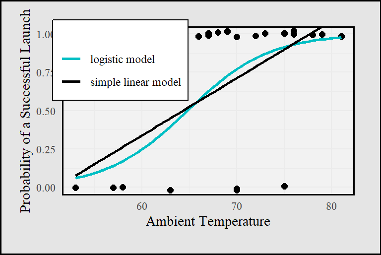
Figure 6.3: Space shuttle data with a simple linear regression model and a logistic regression model.
*?Throughout this chapter, we will use terms such as or , but we actually use natural logs (ln) in our calculations.
Equation (6.5) can be solved for \(\pi_i\) to show that
\[\begin{align} \pi_i &= \frac{e^{\beta_0 + \beta_1 x_i}}{1 + e^{\beta_0 + \beta_1 x_i}} \tag{6.6} \end{align}\]
MATHEMATICAL NOTE: Binary logistic regression assumes that for each \(x_i\) value, the response variable \(Y_i\) follows a Bernoulli distribution (described in the extended activities). This means we assume that (1) each \(Y_i\) is independent, (2) each \(Y_i\) falls into exactly one of two categories represented by either a zero or a one, and (3) for each \(x_i\), \(P(Y_i = 1) = \pi_i\) and \(P(Y_i = 0) = 1 - \pi_i\) (more specifically written as \(P(Y_i = 1 \mid x_i) = \pi_i\) and \(P(Y_i = 0 \mid x_i) = 1 - \pi_i\)). This third assumption states that for any given explanatory variable (a specific temperature value), the probability of success (no O-ring failures) is constant.
It is possible to use least squares regression techniques to estimate \(\beta_0\) and \(\beta_1\) in logistic regression models. However, the assumptions needed for hypothesis tests and confidence intervals using the ordinary least squares regression model are not met. Specifically, even after the log-odds transformation, Figure 6.3 demonstrates that the residuals are not normally distributed and the variability of the residuals depends on the explanatory variable.
Residuals (observed values minus expected values) are used to estimate the error terms. Visual inspection of residual plots is often used to check for normality. Recall from previous work in regression that if the residuals are normally distributed, the scatterplot of the residuals versus the explanatory variable should resemble a randomly scattered oval of points. For example, it should resemble the random scatter you would see if you happened to drop 23 coins (one for each residual value).
In logistic regression, the residuals are \(y_i - \hat\pi_i\). If the observed response \(y_i = 0\), then the residual value is \(-\hat\pi_i\). If the observed response \(y_i = 1\), then the residual value is \(1 - \hat\pi_i\). This leads to the two curves shown in Figure 6.4. When the temperature is low in the space shuttle data (around 55°F, as seen in Figure 6.3), the observed responses tend to be zero and the predicted responses (\(\hat\pi_i\)’s) are small positive numbers. Thus, the residual values (\(-\hat\pi_i\)’s) are negative and close to zero. When the temperature is high, the observed responses tend to be one, the predicted responses are close to one, and the residual values are positive and close to zero.
## Warning: package 'patchwork' was built under R version 4.5.1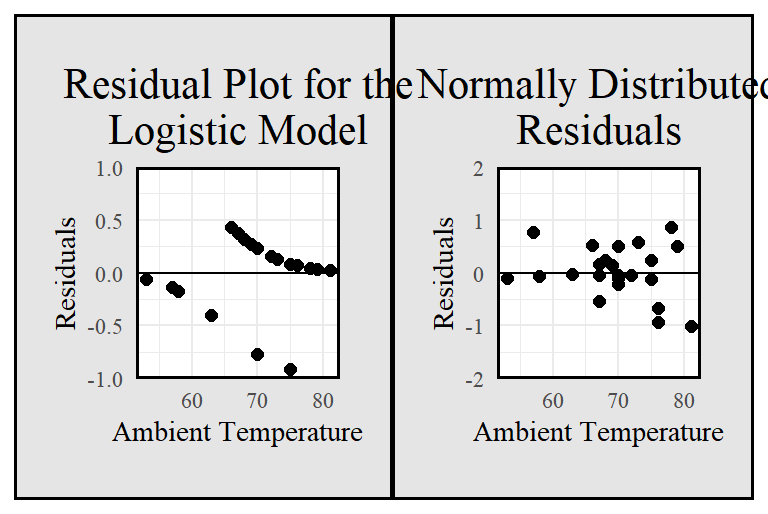
Figure 6.4: A scatterplot of the residuals from the space shuttle logistic regression model and a sample of what a scatterplot of normally distributed residuals might look like.
\[\begin{align} y_i &= \pi_i + \epsilon_i = \beta_0 + \beta_1 x_i + \epsilon_i \quad \text{for } i = 1,2,3,\dots,n \tag{6.7} \end{align}\]
\[\begin{align} y_i &= \pi_i + \epsilon_i = \frac{e^{\beta_0 + \beta_1 x_i}}{1 + e^{\beta_0 + \beta_1 x_i}} + \epsilon_i \quad \text{for } i = 1,2,3,\dots,n \tag{6.8} \end{align}\]
6.4 The Logistic Regression Model Using Maximum Likelihood Estimates
Logistic regression is a special case of what is known as a generalized linear model. Generalized linear models expand linear regression models to cases where the normal assumptions do not hold. All generalized linear models have three components:
Generalized linear models can also be used when the response variable follows other distributions. For example, \(y\) may follow a Poisson or gamma distribution. Textbooks on generalized linear models derive link functions for each of these types of response variables. In least squares regression where the response has a normal distribution, as in Equation (6.1), the link function is simply the identity function. In other words, the response needs no transformation in simple linear regression models.
Clearly the logistic regression model in Figure 6.3 is nonlinear. So it may seem somewhat surprising to consider logistic regression as a generalized linear model. The reason we still call this model linear is that the link function, the log-odds transformation, is modeled with a linear predictor, \(\beta_0 + \beta_1 x\).
Instead of using least squares estimates, generalized linear models use the method of maximum likelihood to estimate the coefficients \(\beta_0\) and \(\beta_1\). The extended activities provide more detail on calculating maximum likelihood estimates in logistic regression. In the space shuttle example, we will simply use a computer software package to find maximum likelihood estimates of \(\beta_0\) and \(\beta_1\).
NOTE:In least squares regression, we often transform the response variable (\(y\)) so that the data fit model assumptions. In addition to linearizing data, transforming \(y\) impacts the variability and the distribution of the error terms. In generalized linear models, the link function transforms the expected response (\(\pi\)) to fit a linear predictor. For those who have had calculus, link functions are also differentiable and invertible.
Activity: Using Software to Calculate Maximum Likelihood Estimates
Solve Equation (6.5) for \(\pi_i\) to show that Equation (6.6) is true.
Use Equation (6.6) to create six graphs. In each graph, plot the explanatory variable (\(x\)) versus the expected probability of success (\(\pi\)) using \(\beta_0 = -10\) and \(-5\) and \(\beta_1 = 0.5\), \(1\), and \(1.5\). Repeat the process for \(\beta_0 = 10\) and \(5\) and \(\beta_1 = -0.5\), \(-1\), and \(-1.5\).
- Do not submit the graphs, but explain the impact of changing \(\beta_0\) and \(\beta_1\).
- For all of these graphs, what value of \(\pi\) appears to have the steepest slope?
- Do not submit the graphs, but explain the impact of changing \(\beta_0\) and \(\beta_1\).
Use statistical software to calculate the maximum likelihood estimates of \(\beta_0\) and \(\beta_1\). Compare the maximum likelihood estimates to the least squares estimates in Question 3.
Figure 6.3 shows a logistic regression model using maximum likelihood estimates of \(\beta_0\) and \(\beta_1\). Using Equation (6.6) and the maximum likelihood estimates from Question 6, we can estimate the probability that a launch has no O-ring damage at temperature \(x_i\):
\[\begin{align} \hat\pi_i &= \frac{e^{b_0 + b_1 x_i}}{1 + e^{b_0 + b_1 x_i}} \\ &= \frac{e^{-15.043 + 0.232 x_i}}{1 + e^{-15.043 + 0.232 x_i}} \\ &\quad \text{for } i = 1,2,3,\dots,n \tag{6.9} \end{align}\]
Notice that \(\pi\) in Equation (6.6) has been replaced by \(\hat\pi\) in Equation (6.9) because the parameters in the linear regression model (\(\beta_0\) and \(\beta_1\)) have been estimated with our sample data; \(b_0 = \hat\beta_0 = -15.043\) and \(b_1 = \hat\beta_1 = 0.232\).
Activity: Estimating the Probability of Success with Maximum Likelihood Estimates
- Use Equation (6.9) to predict the probability that a launch has no O-ring damage when the temperature is 31°F, 50°F, and 75°F.
At this point, it seems reasonable to question why the O-rings were not considered a higher risk at the time of the 1986 Challenger launch. After all, the odds of a successful launch (no O-ring damage) at the expected temperature of 31°F are about 1 to 2555 and the predicted odds change dramatically based on temperature. It is important to recognize that the previous launches did not result in the same disaster as the Challenger launch because the O-rings showed only “minor” damage. This wasn’t enough for gas to escape—only an indicator that the O-rings might not be as resilient as expected.
CAUTIONEstimating a value for a temperature of 31°F is extrapolating beyond our data set. Just as in least squares regression, caution should be used when making predictions outside the range of explanatory variables that are available.
6.5 Interpreting the Logistic Regression Model
Interpretation of logistic regression models is often done in terms of the odds of success (odds of a launch with no O-ring damage). When the temperature is 59°F, the odds of a successful launch with no O-ring damage are \(\hat\pi/(1 - \hat\pi) = 0.2066/(1 - 0.2066) = 0.2605 \approx 0.25 = 1/4\). Thus, at 59°F, we state that the odds of a successful launch are about 1 to 4. When the temperature is 60°F, the odds of a successful launch are \(\hat\pi/(1 - \hat\pi) = 0.3285 \approx 0.333 \approx 1/3\). At 60°F, we state that the odds of a successful launch are about 1 to 3.
The slope is not as easy to interpret for a logistic regression model as for a simple linear regression model. While ordinary least squares regression focuses on \(\beta_1\), logistic regression measures the change in the odds of success by the term \(e^{b_1}\), which is called the odds ratio. If we increase \(x_i\) by 1 unit in a logistic regression model, the predicted odds that \(y = 1\) (i.e., the launch will not have any O-ring damage) will be multiplied by \(e^{b_1}\). For example, when the temperature changes from 59°F to 60°F, the odds increase by a multiplicative factor of \(e^{b_1} = e^{0.232} = 1.2613\). In other words,
\[\begin{align} \text{odds of success at 59°F} \times e^{b_1} &= 0.2605(1.2613) \notag \\ &= 0.3285 \notag \\ &= \text{odds of success at 60°F} \notag \end{align}\]
For any temperature value \(x_i\), this relationship can also be stated as
\[\begin{align} \text{odds ratio} = e^{b_1} &= \frac{\text{odds}(x_i + 1)}{\text{odds}(x_i)} \tag{6.10} \end{align}\]
MATHEMATICAL NOTE: Taking the exponent of Equation (6.5), we can write the odds of success as \[\begin{align} \text{odds} = \biggl(\frac{\pi_i}{1 - \pi_i}\biggr) &= e^{\beta_0 + \beta_1 x_i} = e^{\beta_0}(e^{\beta_1})^{x_i} \tag{6.11} \end{align}\]
Thus, as \(x_i\) increases by 1, \[\begin{align} e^{\beta_0}(e^{\beta_1})^{x_i + 1} &= e^{\beta_0}(e^{\beta_1})^{x_i}(e^{\beta_1}) \tag{6.12} \end{align}\]
Activity: Interpreting a Logistic Regression Model
Calculate the odds of a launch with no O-ring damage when the temperature is 60°F and when the temperature is 70°F.
When \(x_i\) increases by 10, state in terms of \(e^{b_1}\) how much you would expect the odds to change.
The difference between the odds of success at 60°F and 59°F is about 0.3285 – 0.2605 = 0.068. Would you expect the difference between the odds at 52°F and 51°F to also be about 0.068? Explain why or why not.
Create a plot of two logistic regression models. Plot temperature versus the estimated probability using maximum likelihood estimates from Question 6, and plot temperature versus the estimated probability using least squares estimates from Question 3.
Thus far, we have developed a model to estimate the odds of a successful launch with no O-ring failures. However, we have not yet discussed the variability of the estimates or how confident we can be of the results. In the next section, we will discuss two hypothesis tests that can be used to determine if the odds of a successful launch are related to temperature. In other words, can we conclude that the logistic regression coefficient \(b_1\) is not equal to zero?
6.6 Inference for the Logistic Regression Model
Assumptions for Logistic Regression Models
Inference for logistic regression uses statistical theory that is based on limits as the sample size approaches infinity. The techniques, based on what is called asymptotic theory, work well with large sample sizes, but are only approximate with outliers or small sample sizes. It is common for logistic regression models to be developed for data sets of any size, but savvy statisticians will always use caution when interpreting the results for data sets with small sample sizes (such as the space shuttle example).
The Wald Statistic
Wald’s test is often used to test the significance of logistic regression coefficients. Just as in least squares regression, we set up a hypothesis test to determine if there is a relationship between the explanatory and response variables:
\[\begin{align} H_0: b_1 = 0 \quad \text{vs.}\quad H_a: b_1 \neq 0 \end{align}\]
Wald’s test is similar to the one-sample Z-test seen in introductory statistics courses. The Wald statistic is calculated as
\[\begin{align} Z = \frac{b_1 - 0}{\text{se}(b_1)} = \frac{0.232}{0.108} = 2.14 \tag{6.13} \end{align}\]
NOTE: Some texts use a chi-square statistic instead of the Z-statistic given in Equation (6.13). Most probability textbooks explain that the square of the test statistic in Equation (6.13) follows a chi-square distribution with 1 degree of freedom. Both techniques provide identical p-values.
where \(b_1\) is the maximum likelihood estimate of \(\beta_1\) and se(\(b_1\)) is the standard error of \(b_1\). The maximum likelihood estimate, \(b_1\), is asymptotically normally distributed (i.e., \(b_1\) is normally distributed when the sample size is large). Thus, the Z-statistic in Equation (6.13) will follow a standard normal distribution when the null hypothesis is true and the sample size is large. In this model, we see that the estimated slope coefficient \(b_1 = 0.232\) has a p-value of \(P(|Z| \geq 2.14) = 0.032\).
Wald confidence intervals can also be created. In logistic regression, the confidence interval is often discussed in terms of the odds ratio. For example, a 95% confidence interval for \(\beta_1\) is given as
\[\begin{align} (e^{b_1 - Z^* \text{se}(b_1)}, e^{b_1 + Z^* \text{se}(b_1)}) = (e^{0.232 - 1.96(0.108)}, e^{0.232 + 1.96(0.108)}) = (e^{0.02}, e^{0.44}) = (1.02, 1.56) \tag{6.14} \end{align}\]
where 1.96 = Z^* represents a value corresponding to a 95% confidence interval for a normal distribution with mean of 0 and standard deviation of 1. When \(b_1 = 0\), and thus the odds ratio \(e^{b_1} = 1\), the odds of success for temperature \(x_i\) are the same as the odds of success for any other temperature. Thus, \(e^{b_1} = 1\) tells us that there is no association between the explanatory variable and the response.
\textcolor{blue}{When a 95% Wald confidence interval for the odds ratio does not contain 1, we reject the null hypothesis \(H_0: \beta_1 = 0\) (using an alpha-level of 0.05) and conclude that the odds of success do depend on the explanatory variable \(x_i\). If the interval does contain 1, we fail to reject \(H_0: \beta_1 = 0\).}
The Minitab output in Figure 6.5 shows Wald’s test and the corresponding confidence interval for the odds ratio. In the space shuttle example, the 95% confidence interval does not include \(e^{\beta_1} = 1\); thus, we can reject the null hypotheses and conclude that the odds of a successful launch do depend on the temperature. Even though computer software provided a small p-value and a confidence interval that does not include 1, it is important to note that there are only 23 observations in this study. While Wald’s test is reasonable with very large sample sizes, with smaller sample sizes it is known to have a tendency to result in a type II error—failing to reject the null hypothesis when it should be rejected.2
We can also calculate the odds ratio of a successful launch between 60°F and 70°F. When \(x_i\) increases by 10°F, the odds are multiplied by \((e^{b_1})10 = 1.2613^{10} = 10.19\). Thus, we have approximately 10 times higher odds of a successful launch when the temperature is 70°F than when it is 60°F. A 95% confidence interval for the odds ratio of a successful launch between 60°F and 70°F can be given by \((1.02^10, 1.56^10) = (1.22, 85.40)\). This 95% confidence interval has a very wide range; the odds of success at 70°F could be just slightly larger than the odds at 60°F or 85 times as large as the odds at 60°F. This large range suggests that our estimate of the odds ratio, 10.19, is highly variable. More data are needed to better understand the true odds ratio.
Activity: Wald Confidence Intervals and Hypothesis Tests
Calculate the odds ratio of a successful launch between 31°F and 60°F. Provide a confidence interval for this odds ratio and interpret your results.
The coefficients in Equation (6.9) were calculated when a successful launch was given a value of 1. Conduct a logistic regression analysis where 1 indicates an O-ring failure and 0 represents a successful launch.
- Explain any relationships between the model shown in Equation (6.9) and this new model.
- How did the regression coefficients change?
- How did the odds ratio change?
- Create a 95% Wald confidence interval for the new odds ratio and interpret the results.
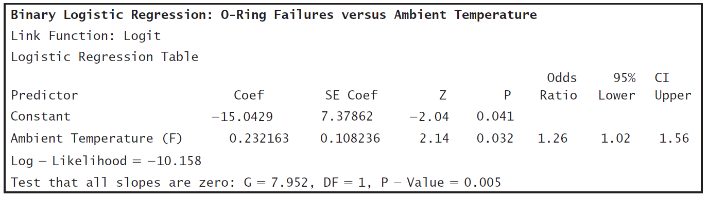
Figure 6.5: Software output for the space shuttle study.
The Likelihood Ratio Test
The likelihood ratio test (LRT) is derived by calculating the difference between the adequacy of the full and restricted log-likelihood models. A full model (sometimes called an unrestricted model) includes all parameters under consideration in the model. In this example, there are only two parameters, \(\beta_0\) and \(\beta_1\), but the full model could include more parameters if more explanatory variables were in the model. The restricted model (also called a reduced model) is a model with fewer terms than the full model. In our example, only \(\beta_0\) is in the restricted model (no explanatory variables are in this model). When no explanatory variables are in the restricted model, the restricted model is also called a null model. If the full model has a significantly better fit (the expected values are closer to the observed values) than the restricted model, we reject the null hypothesis \(H_0: \beta_1 = 0\) and conclude that \(H_a: \beta_1 \neq 0\).
The log-likelihood (restricted) function, described in the extended activities, is a measure of the fit of the model that includes only the intercept:
\[\begin{align} \text{Restricted Model:} \quad \pi_i = \frac{e^{\beta_0}}{1 + e^{\beta_0}} \notag \end{align}\]
For the restricted model, the null hypothesis is true and \(\pi_i\) is constant for any x-value. The log-likelihood (full) function measures the fit of the model that includes all of the parameters of interest:
\[\begin{align} \text{Full Model:} \quad \pi_i = \frac{e^{\beta_0 + \beta_1 x_i}}{1 + e^{\beta_0 + \beta_1 x_i}} \notag \end{align}\]
When the null hypothesis \(H_0: \beta_1 = 0\) is true, it can be shown that
\[\begin{align} G = 2 \times \text{log-likelihood(full model)} - 2 \times \text{log-likelihood(restricted model)} \sim \chi^2_1 \tag{6.15} \end{align}\]
The G-statistic measures the difference between the fits of the restricted and full models. In essence, we are measuring how much better the fit is when an explanatory variable (temperature) is added to the logistic model. If the p-value corresponding to the G-statistic is small, the difference in fits is so large that it is unlikely to occur by chance, and thus we conclude that Ha: b1 0 (the fit of the full model is significantly better than that of the restricted model).
Degrees of freedom for the LRT equal the number of parameters in the full model minus the number of parameters in the restricted model. In our case, this is 2 - 1 = 1. Different software packages will present this test in slightly different ways. In the Minitab output in Figure 6.5, the log-likelihood of the full model (-10.158) and the G-statistic (7.952) are provided.
Other statistics packages may not give the G-statistic, but they will give enough information so that the LRT can be calculated. The R output shown in Figure 6.6 gives the null deviance [K - 2 * log- likelihood (restricted model)] and the residual deviance [K - 2 * log-likelihood (full model)], where K is a constant value.
Note that \[\begin{align} G &= 2 \times \text{log-likelihood(full model)} - 2 \times \text{log-likelihood(restricted model)} \notag \\ &= \text{null (restricted model) deviance} - \text{residual (full model) deviance} \notag \\ &= 7.952. \notag \end{align}\]
Activity: The Likelihood Ratio Test
- Use statistical software to calculate the LRT for the space shuttle data. Submit the p-value and state your conclusions.
The G-statistic is relatively large, indicating that we have some evidence to reject \(H_0: beta_1 = 0\) and conclude that temperature is related to the odds of a successful launch with no O-ring damage. When sample sizes are large and there is only one explanatory variable in the model, the p-values for the LRT and Wald’s test will be approximately the same. In the space shuttle example, the LRT and Wald’s test have somewhat different p-values.
The likelihood ratio test is more reliable and is often preferred over Wald’s test for small sample sizes. However, unlike the LRT, Wald’s test can have one-sided alternative hypothesis tests as well as nonzero hypothesized values. It is difficult to determine the actual sample size needed for Wald’s test or the LRT to perform well. Some statisticians suggest a minimum sample size of 100 observations.\(^7\) Thus, it is best to label each p-value as approximate when using these tests with a small sample size.
6.7 What Can We Conclude from the Space Shuttle Study?
The space shuttle example is an observational study, since the launches were not “randomly assigned” to the temperature groups, so we cannot conclude solely from this data set that low temperatures caused O-ring damage. Wald’s test and the likelihood ratio test both provided some evidence that the odds of a successful launch are related to temperature. However, a sample size of 23 is not large enough for us to be confident that the p-values are reliable. The logistic regression model provides some indication that the probability of a successful launch is related to temperature. Other information, such as scientists understanding that cold temperatures cause O-rings to be more brittle, also strengthens the conclusion.
6.8 Logistic Regression with Multiple Explanatory Variables
Wolberg and Mangasarian developed a technique to accurately diagnose breast masses using only visual characteristics of the cells within the tumor. A sample is placed on a slide, and characteristics of the cellular nuclei within the tumor, such as size, shape, and texture, are examined under a microscope to determine whether the cancer cells are benign or malignant. Benign tumors are scar tissue or abnormal growths that do not spread and are typically harmless. Malignant (or invasive) cancer cells are cells that can travel, typically through the bloodstream or lymph nodes, and begin to replace normal cells in other parts of the body. If a tumor is malignant, it is essential to remove or destroy all cancerous cells in order to keep them from spreading. If a tumor is benign, surgery is typically not needed and the harmless tumor can remain.
In Chapter 6, we used contingency tables with only two variables, cell shape and type, to better understand how to analyze two categorical variables. This section will describe the process of variable selection in logistic regression, using the radius and the concavity of cell nuclei to estimate the probability that a tumor is malignant. In this data set, radius is actually the average radius (in micrometers, \(\mu\)m) of all visible cell nuclei from a slide, but we will refer to this variable simply as the cell radius for the tumor. The concavity of the cell nuclei is an indicator of whether the visible cell nuclei from the sample have the nice round shape of typical healthy cells or whether cells appear to have grown in such a way that the perimeters of the cell nuclei tend to have concave points.
Activity: Estimating the Probability of Malignancy in Cancer Cells
Data set: Cancer2
- Create a logistic regression model using Radius and Concave as explanatory variables to estimate the probability that a mass is malignant.
- Using Radius as the first explanatory variable, \(x_1\), and Concave as the second explanatory variable, \(x_2\), submit the logistic regression model. In other words, find the coefficients for the model
\[\begin{align} y_i &= \frac{e^{\beta_0 + \beta_1 x_{1,i} + \beta_2 x_{2,i}}}{1 + e^{\beta_0 + \beta_1 x_{1,i} + \beta_2 x_{2,i}}} + \epsilon_i \quad \text{for } i = 1,2,\dots,n \end{align}\]
- Submit the likelihood ratio test results, including the log-likelihood (or deviance) values.
- Concave = 0 represents round cells and Concave = 1 represents concave cells. Calculate the event probability when Radius = 4 and the cells are concave. Also calculate the event probability when Radius = 4 and the cells are not concave.
- Create a logistic regression model using only Radius as an explanatory variable to estimate the probability that a mass is malignant.
- Submit the logistic regression model and the likelihood ratio test results, including the log-likelihood (or deviance) values.
- Calculate the event probability when Radius = 4.
When there are multiple explanatory variables in a logistic regression model, such as in the model created in Question 15, the likelihood ratio test compares the full model to the null model, which excludes the radius and concavity terms. Thus, the null hypothesis is that the coefficient corresponding to each of the explanatory variables is zero. In Question 15, the LRT is testing
\[H_0: \beta_1 = \beta_2 = 0 \quad \text{vs.}\quad H_a: \text{at least one of the coefficients is not zero}\]
The G-statistic for this hypothesis test is 527.42 with 3 - 1 = 2 degrees of freedom (the number of parameters in the full model minus the number of parameters in the restricted model) and a corresponding p-value < 0.001. Thus, we can reject \(H_0\) and conclude that at least one of the explanatory variables is significantly related to the probability that the cells are malignant.
The coefficients in multiple logistic regression models are discussed in terms of the odds of success. Any coefficient (\(b_j\)) indicates how the response will change corresponding to the \(j\)th explanatory variable, conditional on all other explanatory variables in the model. When the \(j\)th explanatory variable is increased by one unit, the odds of success will be multiplied by \(e^{b_j}\). When an explanatory variable (\(x_j\)) is binary, as Concave is, \(e^{b_j}\) represents the odds ratio between the two groups. However, just as in ordinary least squares regression with multiple explanatory variables, these coefficients are conditional on the other terms in the model.
6.9 The Drop-in-Deviance Test
Figure 6.7 provides the expected probabilities for the model created in Question 15. The probability of a cell being malignant appears to depend on Radius. In addition, it appears that concavity is an important variable in the model, since concave cells tend to have a higher estimated probability of being malignant. In Chapter 3, variable selection is described as a process of determining which explanatory variables should be included in a regression model. Ideally, we would like the simplest model (i.e., the model with the fewest terms) that best explains the response (i.e., the model that has the smallest residuals). In this example, we want to determine if the model in Question 16 can estimate the probability of malignancy just as accurately as the slightly more complex model in Question 15. If the models have similar abilities to estimate the probability of malignancy, then we will prefer the simpler model.
The logic for determining whether additional terms should be in a logistic regression model is essentially the same as for the LRT discussed in connection with the space shuttle study. The log-likelihood (or deviance) can be used to measure how well any model fits the data. If a full model with two explanatory variables, \(x_1\) and \(x_2\), has a much better fit than a restricted model with just one explanatory variable, \(x_1\), we can conclude that \(x_2\) is significant and should be included in the model.
If the LRT shows no significant difference between the full and the restricted model, the coefficient of the second variable, \(x_2\), can be set to zero and we can conclude that including the additional variable in the model does not improve our ability to estimate the probability of success (in this case, success represents a malignant cell).
In the cancer study, we can compare the full log-likelihood (or deviance) from the two-term model in Question 15 to the restricted log-likelihood (or deviance) from the one-term model in Question 16.
\[\begin{align} G &= 2 \times \text{log-likelihood (full model)} - 2 * \text{log-likelihood (restricted model)} \notag \\ &= 2(-112.008) - 2(-165.005) \notag \\ &= \text{null (restricted model) deviance} - \text{residual (full model) deviance} \notag \\ &= 105.994 \tag{6.16} \end{align}\]
Just as in the LRT described in connection with the shuttle example, degrees of freedom are calculated as the number of parameters in the full model minus the number of parameters in the restricted model. Thus, we can test whether \(Concave\) (\(x_2\)) should be included in the model by finding the \(p\)-value, which is the percentage of the \(\chi^2\) distribution with 3 - 2 = 1 degree of freedom that exceeds \(G\). The \(p\)-value corresponding to Equation (6.16) is less than 0.0001. We have strong evidence that the explanatory variable, \(Concave\), is important in the model when \(Radius\) is already included. Thus, the logistic regression model in Question 15 is preferred over the model in Question 16.
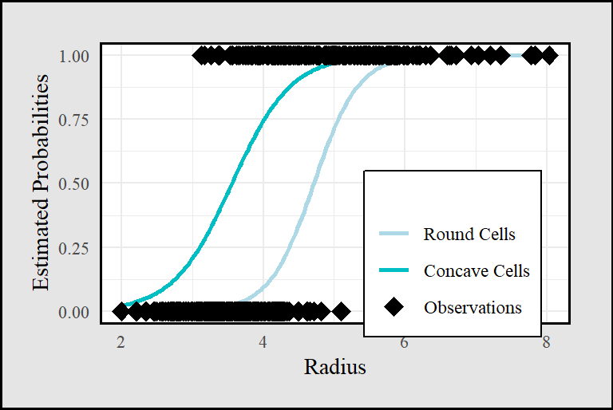
Figure 6.6: A scatterplot of the observed data and estimated probabilities for both round cells (Concave= 0) and concave cells (Concave= 1).
When the LRT is used for variable selection, it is often called the change-in-deviance test or drop-in-deviance test. This test is valid only when the restricted model is nested within the full model. A restricted model is nested in a full model when every explanatory variable in the restricted model is also in the full model.
MATHEMATICAL NOTE The drop-in-deviance can also be used to simultaneously test multiple variables. For example, let’s assume that there were four Shape measurements (round, slightly concave, moderately concave, and severely concave). These four levels would be used to create three indicator variables. If we are interested in testing whether \(Shape\) is important, we should test all three coefficients simultaneously. The steps in testing three coefficients simultaneously are identical to the steps listed above except that instead of just testing for \(x_j\), we are simultaneously testing for \(x_2\), \(x_3\), and \(x_4\). Then the null hypothesis would be \(H0: \beta_2 = \beta_3 = \beta_4 = 0\), where each of these coefficients corresponds to one \(Shape\) indicator variable in the full model.
Drop-in-deviance tests are often used in combination with stepwise regression techniques in order to identify the best model for prediction. In the end-of-chapter exercises, backward elimination procedures analogous to those used in multiple least squares regression will be used to find an appropriate model. The procedure starts with all explanatory variables of interest in the model. Variables that do not appear to besign ificant (or do not significantly reduce the size of the residuals) are removed in a stepwise process. The process is continued until all variables in the model are significant (or the model consists of only variables that are important in reducing the size of the residuals).
Just as in least squares regression, there is often no “best” multivariate logistic regression model. Different stepwise procedures, sampling variability, the desired balance between the accuracy and the simplicity of the model, and choice of terms tested all can influence the final model that is selected. While there should be careful justification for selecting a final model, caution should be used before stating that any selected model is “the best.”
CAUTION Recall that stepwise techniques are useful for developing models if the goal is to estimate or predict a response. However, they are not appropriate if the goal of developing a regression model is theory test- ing. Stepwise procedures involve multiple testing on the same variables. This leads to unreliable p-values when testing the coefficients of individual explanatory variables. Thus, it is inappropriate to use stepwise procedures to find a good model and then test each coefficient on your final model to determine if the individual explanatory variables are significant.
NOTE Some software packages have programs that will automatically suggest a model for logistic regression (just as is done for stepwise procedures in least squares regression). While this chapter focuses only on the drop-in-deviance test, there are other techniques that can be used in variable selection. \[\begin{align} \textbf{Akaike’s Information Criterion (AIC)} &= -2 \times \text{log-likelihood} + 2 \times p \notag \\ \textbf{Bayesian Information Criterion (BIC)} &= -2 \times \text{log-likelihood} + p \times ln(n) \notag \end{align}\] where p is the number of estimated parameters (the number of explanatory variables plus 1) and n is the sample size. Both the AIC and the BIC adjust for the number of parameters in the model and are more likely to select models with fewer variables than the drop-in-deviance test. Both techniques suggest choosing a model with the smallest AIC or BIC value
6.10 Measures of Association
When sample sizes are small, a model may have a strong association (a clear pattern is visible) but not have enough evidence to show that the independent variable is significant. Conversely, if there were thousands of observations in a data set, a hypothesis test might conclude that an independent variable was significant even though there was only a very weak association. Thus, researchers typically report both significance tests and a measure of association when discussing results. While there is no widely accepted equivalent to \(R^2\) in logistic regression, this section will describe calculations that can be used to measure the strength of association.
To measure the strength of association in the space shuttle logistic regression model, pair each observed success with every observed failure. In the shuttle example, there are 16 successes and 7 failures; thus, there are \(16 \times 7 = 112\) pairs. For each pair, use the logistic regression model to estimate the probability of success for both the observed success and the observed failure. If the observation corresponding to a success has a higher estimated probability, the pair is called a concordant pair. If the observation corresponding to a success has a lower estimated probability, the pair is called a discordant pair. Tied pairs occur when the observed success has the same estimated probability as the observed failure.
If all possible pairs were concordant, then Somers’ \(D\) would equal 1. If the model had no predictive power, we would expect half the pairs to be concordant and half to be discordant. This would correspond to Somers’ \(D = 0\). Thus, a value of 0 for Somers’ \(D\) (as well as Goodman and Kruskal’s gamma) indicates no effect of the explanatory variable on the response variable.
Activity: Measures of Association
Data set: Shuttle
The first and eleventh launches form a pair, since at 63°F there was an O-ring failure and at 66°F there was a success (no O-ring failure). This is a concordant pair, since the probability of success is higher when there was an observed success. Estimate the probability of success for each temperature.
Calculate the expected probabilities of the first (66°F) and 22nd (75°F) observations. Is this a concordant or discordant pair?
Identify two launches in the space shuttle data that represent a tied pair.
Various statistical software packages tend to provide different measures of association. Use statistical software to calculate the Goodman-Kruskal gamma, Somers’ \(D\), or Kendall’s tau-a for the space shuttle data.
Minitab output for the space shuttle data is provided in Figure 6.8. The output shows that 75.9% of the pairs were concordant, while 19.6% of the pairs were discordant. This provides some evidence of association between temperature and probability of a successful launch.
\[\begin{align} \text{Somers’ D} &= (85 - 22)/112 = 0.56 \notag \\ \text{Goodman-Kruskal gamma} &= (85 - 22)/(112 - 5) = 0.59 \notag \\ \text{Kendall’s Tau-a} &= (85 - 22)/(253) = 0.25 \notag \\ \text{where } 253 &= 23 \times 22/2, \text{the total number of pairs} \notag \end{align}\]
Somers’ D and the Goodman-Kruskal gamma are very close to each for other because there are very few tied pairs. There are no \(p\)-values corresponding to these measures, but they are useful for compar- ing different models with different explanatory variables or comparing models based on different link functions.
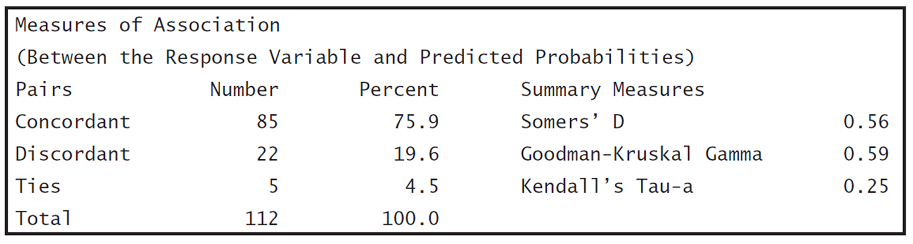
Figure 6.7: Minitab output showing measures of association for the space shuttle data.
6.11 Review of Means and Variances of Binary and Binomial Data
If you have worked with discrete probability models, you will recognize that binary data follow a Bernoulli distribution if the following conditions are true:
- Each observation, \(y_i\), is independent.
- Each \(y_i\) falls into exactly one of two categories represented by either a zero or a one.
- The probability of success, \(P(Y_i = 1) = \pi_i\), is constant for each observation.
The Bernoulli distribution can be displayed as in Table 6.2. Table 6.2 is often represented with the following mathematical function to model the Bernoulli distribution:
\[\begin{align} P(Y = k) &= \pi^k (1 - \pi)^{1-k} \quad \text{for } k = 0, 1 \tag{6.17} \end{align}\]
The expected value (mean) of \(y\) is the average outcome:
\[\begin{align} E(Y) &= 0 \times P(Y = 0) + 1 \times P(Y = 1) = 0 \times (1 - \pi) + 1 \times \pi = \pi \tag{6.18} \end{align}\]
Each outcome is not equally likely. Thus, each outcome is weighted by its probability. The variance of \(y\) is the average value of the squared deviation of the observed value, \(y\), and the expected value, \(\pi\):
\[\begin{align} \mathrm{Var}(Y) &= E[(Y - \pi)^2] = (0 - \pi)^2 \times P(Y = 0) + (1 - \pi)^2 \times P(Y = 1) = \pi (1 - \pi) \tag{6.19} \end{align}\]
In the above equations, \(\pi\) is the same for every observational unit and the results for each observational unit are independent of each other. However, in regression we focus on the expected value of \(y\) given \(x\), \(E(Y \mid x_i)\). This represents the expectation that the probability of success depends on an explanatory variable. In the space shuttle example, the expected probability of a successful launch will change depending on the temperature. For any given temperature value, \(x_i\), the probability of success is constant, \(\pi_i\), and the observations are independent. Thus, for a particular \(x_i\), the corresponding mean and variance are
\[\begin{align} E(Y \mid x_i) &= \pi_i \quad \text{and} \quad \mathrm{Var}(Y \mid x_i) = \pi_i (1 - \pi_i) \tag{6.20} \end{align}\]
Thus, in logistic regression with Bernoulli response variables, the variance of \(Y\) will depend on \(x\). This violates the key assumption of constant variance in least squares regression models.
Logistic regression is also appropriate when the response is a count of the number of successes. A count follows a binomial distribution if the following conditions are true:
- There are \(n_i\) independent observations at a given level of \(x\) (\(x_i\)).
- \(\pi_i = P(Y_i = 1 \mid x_i)\) is the probability of success, and this probability is constant for any given \(x_i\) (\(0 \le \pi_i \le 1\)).
- Each response has only two possible outcomes. However, instead of recording a 0 or a 1 value for each outcome, we typically record \(Y\) as the count of successes (or proportion of successes) at a particular \(x_i\) value.
Many introductory textbooks show that if the data follow a binomial distribution, the probability that there are \(k\) successes in \(n_i\) independent observations is:
\[\begin{align} P(Y = k \mid x_i) &= \binom{n_i}{k} \,\pi_i^k (1 - \pi_i)^{n_i - k} \quad \text{for } k = 0, 1, \dots, n_i \tag{6.21} \end{align}\]
where \(\displaystyle \binom{n_i}{k} = \frac{n_i!}{k!\,(n_i - k)!}\) is called the binomial coefficient and is read as “\(n_i\) choose \(k\).”
Using a technique similar to that for the Bernoulli distribution, it can be shown that the conditional mean (probability of success) and variance of binomial response variables are
\[\begin{align} E(Y \mid x_i) &= n_i \times \pi_i \quad \text{and} \quad \mathrm{Var}(Y \mid x_i) = n_i \times \pi_i (1 - \pi_i) \tag{6.22} \end{align}\]
Activity: Understanding the Binomial Distribution
Assume that for a particular temperature \(x_i = 70^\circ\mathrm{F}\) the true probability of success is \(\pi_i = 0.75\). If there are four launches made at \(x_i = 70^\circ\mathrm{F}\), use Equation (6.21) to find the probability that all four launches are successful, \(P(Y_i = 4 \mid x_i = 70)\). Also find the probability that one of the four launches is successful, \(P(Y_i = 1 \mid x_i = 70)\).
When there are four observations (\(n_i = 4\)) and \(\pi_i = 0.75\), use the basic formula for calculating means
to find
When \(n_i = 4\) and \(\pi_i = 0.75\), find \(\mathrm{Var}(Y_i \mid x_i)\).
6.12 Calculating Logistic Regression Models for Binomial Counts
In the previous examples, \(y\) was considered a binary random variable (either 0 or 1). In this example, logistic regression will be used when the response is a count of the number of successes (i.e., the response is binomial). Table 6.3 shows the cancer cell data with the \(Radius\) variable grouped into five levels. Clearly grouping is not necessary for logistic regression, but this grouping is done to demonstrate how to conduct logistic regression when the response is binomial.
Activity: Binomial Logistic Regression
Data set: Table 6.3
- Create a logistic regression model based on Equation (6.8) to predict the probability of a malignant cell from the grouped radius data in Table 6.3.
- What are the maximum likelihood estimates \(b_0\) and \(b_1\)?
- Substitute \(b_0\) and \(b_1\) into Equation (6.9) to estimate the probability of malignancy when the radius is 4.5.
- Use Wald’s test and the \(G\)-statistic to determine if this model provides evidence that the probability of malignancy is related to cell radius.
Figure 6.9 plots the observed percentages of malignant cells and the corresponding logistic regression model. Notice that the observed and expected probabilities are fairly close. However, the observed percentage of malignant cells was higher than expected when the cell radius was 4.5.
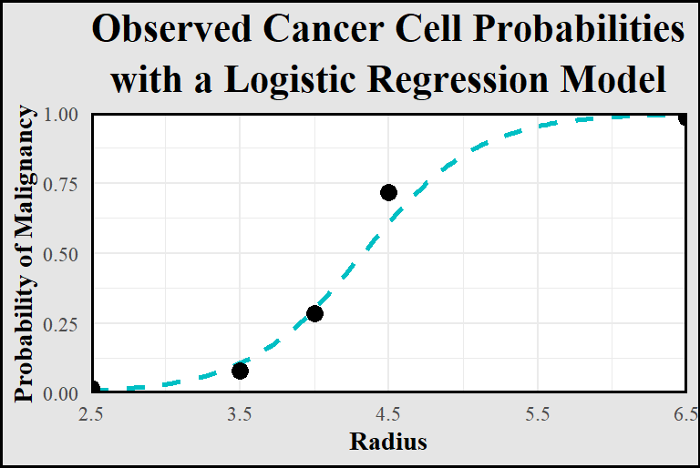
Figure 6.8: A logistic regression model, with \(\hat \pi_i\) estimated from Equation (6.8) using maximum likelihood estimates, plotted with the observed probability of malignancy for the grouped data in Table 6.3.
6.13 Calculating Residuals for Logistic Models with Binomial Counts
When the response variable follows a binomial distribution as in Table 6.3, Pearson residuals and deviance residuals are often calculated. These residuals are calculated to evaluate how well a model fits the data.
Using our estimate \(\hat\pi_i = \frac{e^{b_0 + b_1 x_i}}{1 + e^{b_0 + b_1 x_i}}\) for \(\pi_i\), we find the Pearson residual by taking the number of observed successes (\(y_i\)) minus the estimated number of expected successes (\(n_i \times \hat\pi_i\)) and then dividing by the estimated standard deviation:
\[\begin{align} \text{Pearson residual for the $i$th radius value} = \frac{y_i - n_i \,\hat\pi_i}{\sqrt{n_i \,\hat\pi_i\,(1 - \hat\pi_i)}} \tag{6.23} \end{align}\]
Since the variance is not constant, each residual is weighted by its own estimated standard deviation.
NOTE We can calculate the Pearson residual using count data because we know that for any individual radius, \(x_i\), the response variable, \(y_i\), follows a binomial distribution with an estimated mean \(n_i \times \hat\pi_i\) and variance \(n_i \times \hat\pi_i \times (1 - \hat\pi_i)\).
Activity: Evaluating Residuals in Binomial Logistic Regression
Data set: Table 6.3
- Create a logistic regression model to predict the probability of a malignant cell from the grouped radius data in Table 6.3.
- Use software to calculate the Pearson residuals.
- Create a histogram and/or a normal probability plot of these residuals. Are the residuals normally distributed?
- Create a scatterplot of the Pearson residuals versus radius. How accurate are the estimates when radius is 2.5 and when radius is 4.5?
- For each observation, the deviance residual measures the change in deviance from the full to the null model. Each deviance residual is the square root of the deviance goodness–of–fit statistic for each cell (or distinct radius value). The deviance residual is \[\begin{align} D_i \,\pm\, \sqrt{2 \Bigl[ y_i \ln\bigl(\tfrac{y_i}{n_i\,\hat\pi_i}\bigr) \;+\;(n_i - y_i)\ln\bigl(\tfrac{n_i - y_i}{n_i - n_i\,\hat\pi_i}\bigr) \Bigr]} \tag{6.24} \end{align}\] where the sign is positive if the observed \(y_i\) is higher than the estimated mean and negative if the observed \(y_i\) is less than the estimated mean. Repeat Question 27 but use the deviance residual instead of the Pearson residual.
6.14 Assessing the Fit of a Logistic Regression Model with Binomial Counts
A goodness‐of‐fit test measures how well a model fits the observed data. We will discuss three goodness‐of‐fit tests for logistic regression based on the chi‐square distribution. As discussed in Chapter 6, a chi‐square goodness‐of‐fit test is an asymptotic test that measures the accumulated distance between observed values and expected values (i.e., values predicted by our model). In each of the three tests, the null and alternative hypotheses are
\[\begin{align} H_0:\;&\text{the logistic regression model provides an adequate fit to the data} \notag \\ H_a:\;&\text{the model does not adequately fit the data} \notag \end{align}\]
If the predicted values in the model are relatively close to the observed data values (i.e., the model is a good fit for the data), then the test statistic will be small and the \(p\)-value will be large. If the test statistic is large, it suggests “lack of fit”; \(H_0\) should be rejected and other models should be tried to better fit the data.
Test 1: The Pearson chi‐square goodness‐of‐fit test is the traditional chi‐square goodness‐of‐fit test seen in many introductory statistics courses. Degrees of freedom are calculated as the number of groups (classes) minus the number of parameters being estimated. In our case, groups are classified by median radius; we have five groups and are estimating two parameters (\(\beta_0\) and \(\beta_1\)), so there are \(5 - 2 = 3\) degrees of freedom.
Test 2: The deviance goodness‐of‐fit test (also called the likelihood ratio chi‐square test) is based on the sum of squared deviance residuals. The test statistic follows a chi‐square probability distribution where the degrees of freedom are calculated as the number of groups minus the number of parameters being estimated. The Pearson test statistic and the deviance test statistic tend to be similar. For determining a model, the deviance goodness‐of‐fit test is preferred over the Pearson test.\(^9\)
NOTE
The sum of squared Pearson residuals is equal to the Pearson chi‐square test statistic. When there is one explanatory variable, the likelihood ratio test is equivalent to the deviance goodness‐of‐fit test. The residual deviance and the degrees of freedom given in R are identical to those given in the deviance goodness‐of‐fit test statistic in Minitab.
Test 3: Hosmer and Lemeshow developed a test similar to the Pearson chi‐square goodness‐of‐fit test. The key distinction is that the groups are formed differently. While the Pearson test uses the explanatory variable to form groups, the Hosmer‐Lemeshow test uses the predicted values to sort the data and form groups (the default is 10 groups). In Table 6.3, we predetermined the five groups, so the Pearson and Hosmer‐Lemeshow tests are identical in this example. However, when the explanatory variable is continuous (not grouped), the Hosmer‐Lemeshow test is more reliable than the Pearson chi‐square goodness‐of‐fit test.
Activity: Calculating Residuals by Hand
Data set: Cancercells
- Calculate the Pearson chi‐square goodness‐of‐fit test by hand for the Cancercells data.
- Complete Table 6.4 by using the logistic regression model from Question 26 to calculate the expected (predicted) cell counts.
- Calculate the Pearson chi‐square test statistic:
\[\begin{align} \chi^2 &= \sum \frac{(\text{observed count} - \text{expected count})^2}{\text{expected count}} \tag{6.25} \end{align}\] using the observed count and expected count from Table 6.4. Note that there are 10 observed and 10 expected cells.
- Find the \(p\)-value by using software or looking up the statistic in a chi‐square probability distribution table.
- Interpret the results and clearly state how your conclusions are impacted by random sampling and random allocation to treatments in the original study design. Remember that a small \(p\)-value provides evidence that the model is not a good fit.
- Calculate the deviance chi‐square goodness‐of‐fit test by hand for the Cancercells data given in Table 6.3. Expected counts, degrees of freedom, and \(p\)-values are found the same way as in the Pearson test. The only difference is in the calculation of the test statistic:
\[\begin{align} \text{Deviance chi-square test statistic} = D^2 = 2 \times \sum \biggl[\text{observed count} \times \ln\bigl(\frac{\text{observed count}}{\text{expected count}}\bigr)\biggr] \tag{6.26} \end{align}\] Describe differences (if any) between your conclusions here and those from the Pearson test in Question 29.
Figure 6.10 shows the Minitab output for the logistic regression model fit and the three goodness-of-fit tests. Note that all three goodness-of-fit tests show small p-values, indicating that we can reject \(H_0\) and con- clude that the model is not a good fit. In addition, the cell counts shown in Question 29 reveal that the sample size is large enough for us to believe the tests are reliable. Thus, other models should be tried. The logistic regression model shown in Figure 6.10 looks reasonable, but there are many possible explanations as to why the data are not considered a good fit:
The groups based on median radius may not be appropriate. For example, radii of 1.51 and 2.49 were considered part of the same group. We could create more groups with smaller class sizes. Clearly we lose information whenever data are grouped into categories, so using the original data is likely the best option.
Additional explanatory variables may need to be included in the model. Just as in ordinary regres- sion, it may be appropriate to include interaction terms or transformations (such as the square, cube, or log) of the explanatory variable(s).
The binomial model may not appropriately model the response variable or a transformation other than the logit transformation may need to be tried. Notice that the logit model assumes symmetry; the curves in the S are the same shape and symmetric around the midpoint of the data.
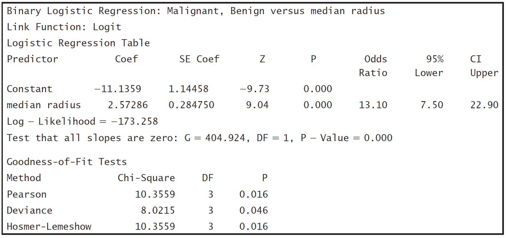
Figure 6.9: Software output for the Cancercells study
- A few outliers may be significantly influencing the results. For example, when the median radius is 4.5, the observed probability is not very close to the expected value. This point greatly contributes to the large chi-square statistics in Questions 29 and 30.
Since chi-square tests are based on asymptotic theory, the p-values are not reliable unless there is a large enough sample size. A general rule for analyzing a 2 \(\times\) 2 table of counts is that the expected count for each cell must be at least 5. For larger tables, the expected counts for all cells must be at least 1, and the average of expected cell counts should be greater than 5.
When the data are sparse (the observed, and therefore the expected, cell counts are too small), chi-square tests may tend to fail to reject the null hypothesis which states that the model is a good fit for the data.\(^10\) In other words, these tests may not have good power for detecting particular types of lack of fit. The Hosmer-Lemeshow test is designed to correct for this problem (when there are continuous explanatory variables) by grouping the data. Hosmer and Lemeshow suggest that you have a sample size of at least 400 before using their test.\(^11\)
Activity: Goodness‐of‐Fit Tests for Continuous Explanatory Variables
Data set: Cancer2
- Use computer software to create a logistic regression model to predict the probability of a malignant cell using the continuous variable \(Radius\) as the explanatory variable. Conduct the three goodness‐of‐fit tests for this model.
The goodness-of-fit tests in Question 31 look very different from those calculated with the grouped data in Figure 6.10. Remember that for goodness-of-fit tests, the degrees of freedom are calculated as the number of groups minus the number of parameters being estimated. There are two parameters estimated, and the stated 454 degrees of freedom for the Pearson and deviance tests indicate that 456 groups were formed (based on each distinct radius value given in the data). Since there are 569 observations in this data set, the Pearson and deviance goodness-of-fit tests do not meet the sample size requirements for a reliable test (most of the cells have only one observation).
In Question 31, the Pearson and deviance goodness-of-fit tests fail to reject \(H_0\): the logistic regression model provides an adequate fit to the data. However, the violation of the sample size requirement makes these tests inappropriate to use.
The Hosmer-Lemeshow test in Question 31 has only 8 degrees of freedom, since the default is to form 10 groups based on the fitted values. To form the groups, statistical software sorts the estimated probabilities and then attempts to create 10 groups of equal size. The observed and expected values are given in the software output. Notice that there are still two cells with expected values less than 1.
Recent studies have shown that the Hosmer-Lemshow test is somewhat sensitive to the way groups are formed, and other more specific tests have been developed.\(^12\) However, since the p-value is much bigger than \(\alpha = 0.05\), there does not appear to be strong evidence that the model is not a good fit.
Hosmer and Lemeshow state that slight violations of the sample size requirements are acceptable.\(^13\) They suggest that if there is a sample size concern, you simply group a few columns. For example, in Question 31, grouping columns 1 and 2 and grouping columns 9 and 10 would satisfy the sample size requirements.
Activity: Goodness‐of‐Fit Tests for Continuous Explanatory Variables
Data set: Cancer2
- Conduct the Hosmer‐Lemeshow goodness‐of‐fit test again, but this time adjust the group size (or number of groups) so that the sample size requirement is not violated. Did the \(p\)-value of this new Hosmer‐Lemeshow test change your conclusions?
6.15 Diagnostic Plots
Just as in least squares regression, residual plots are useful in understanding logistic models. Goodness‐of‐fit tests are useful, but, as stated earlier, they tend to fail to reject the null hypothesis even when the model is not appropriate. When these chi‐square tests fail to conclude that a model is inappropriate, residual plots can be used to verify that the model fit is appropriate. In addition, if the goodness‐of‐fit tests do reject the null hypothesis (conclude that the model is not appropriate), residual plots can help identify where the issues of model fit occur.
Large residual values are useful in identifying observations that are not explained well by the model. In addition to residuals, several scatterplots can be used to identify outliers and influential observations. Before creating these plots, we will need to define a few additional terms.
A covariate pattern is a set of all observations with identical explanatory variables. In the space shuttle example, there are four observations where the temperature is 70°F. These four observations form a covariate pattern. In the Cancer2 data set, a covariate pattern is a group of observations with both the same Radius value and the same Concave value.
Delta chi-square (\(\Delta \chi^2\)) is a measure of the change in the Pearson goodness-of-fit statistic (x2) when a particular observation (or covariate pattern if there is more than one observation with the same explanatory values) is eliminated. In other words, for a particular xi value, delta chi-square is \(\Delta \chi^2_i = \chi^2 \;-\;\chi^2_{(i)}\), where \(\chi^2_{(i)}\) is the Pearson goodness‐of‐fit statistic with the \(i\)th observation (or covariate pattern) eliminated.
Delta deviance (\(\Delta D^2\)) is a measure of the change in the deviance goodness-of-fit statistic (D2) when a particular observation (or covariate pattern) is eliminated. In other words, for a particular \(x_i\) value, delta chi- square is \(\Delta D^2_i = D^2 \;-\; D^2_{(i)}\), where \(D^2_{(i)}\) is the deviance goodness‐of‐fit statistic with the \(i\)th observation (or covariate pattern) eliminated.
Delta beta measures the difference in the regression coefficient when a particular observation (or covariate pattern) is removed.
Figure 6.11 shows the delta chi‐square, delta deviance, and delta beta values plotted against the expected probabilities (\(\hat\pi_i\)). The determination as to whether or not an observation (covariate pattern) is an outlier or overly influential is somewhat subjective. Outliers typically appear as extreme values in the upper corners of the scatterplot. As a rough estimate, \(\Delta\chi^2\) or \(\Delta D^2\) greater than 4 and delta beta values greater than 1 may be considered unusual observations. With large sample sizes, \(\Delta\chi^2\) and \(\Delta D^2\) approximately follow the chi‐square distribution, and the 95th percentile of the chi‐square distribution with 1 degree of freedom equals 3.84. Figure 6.11 has one covariate pattern that has a fairly large \(\Delta\chi^2\) and \(\Delta D^2\) values. It corresponds to the two launches that occurred at 75°F. Notice in Figure 6.11 that a failure at 75°F appears to be somewhat unusual. In this example, the \(\Delta\chi^2\) and \(\Delta D^2\) values are not extreme enough to be of major concern (all values are close to or less than 4).
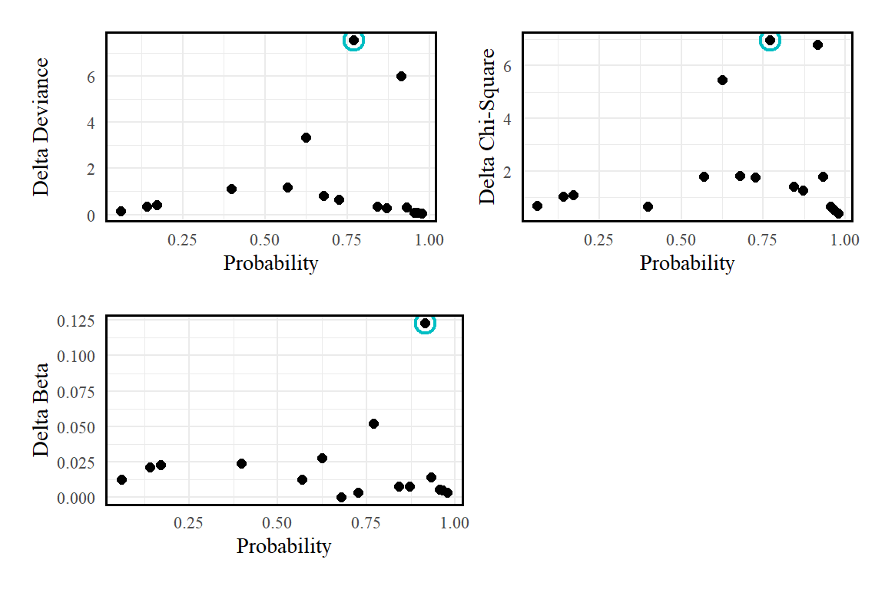
Figure 6.10: Scatterplots of delta deviance, delta chi-square, and delta beta values versus the expected probabilities from the space shuttle data. Circled values represent launches at 75°F.
Figure 6.12 shows the delta chi‐square and delta beta values plotted against the leverage values. Leverages are values between 0 and 1 that depend only on the explanatory variables (not the response). Large leverage values indicate that the observation (covariate pattern) has extreme explanatory values and may have a large influence on the regression coefficients.
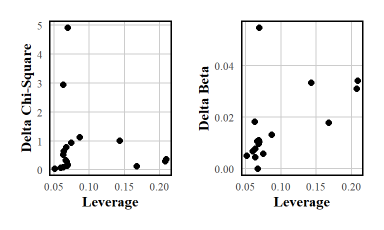
Figure 6.11: Scatterplots of delta chi-square and delta beta values versus leverage from the space shuttle data. The extreme value along the y-axis represents the launches at 75°F. There do not appear to be any extreme leverage values.
Activity: Identifying Outliers and Influential Observations
Data set: Cancer2
- Run a logistic regression model with both explanatory variables Radius and Concave.
- Create histograms of the standardized Pearson residuals and deviance residuals.
- Create scatterplots of delta deviance, delta chi‐square, and delta beta (standardized) versus the expected probabilities.
- Create scatterplots of delta deviance, delta chi‐square, and delta beta (standardized) versus the leverage.
- Identify any observations (covariate patterns) that appear to be outliers or influential observations.
6.16 Maximum Likelihood Estimation in Logistic Regression
Maximum likelihood estimation is a fairly complex topic. The goal of this section is simply to provide an example of how to calculate maximum likelihood estimates with binomial data. After completing this section, you should have a better understanding of how the LRT and the deviance test are calculated. However, as stated earlier, maximum likelihood estimates are very computationally intensive and are best left to computer algorithms.
MATHEMATICAL NOTE When the assumptions about the residuals in the least squares regression model described in Section 6.2 are satisfied, the maximum likelihood estimates of \(\beta_0\) and \(\beta_1\) are identical to the least squares estimates.
Maximum Likelihood Estimator for Binary Data
Consider a set of independent binary responses \(y_1, y_2, \dots, y_n\). Since each observed response is independent and follows the Bernoulli distribution shown in Equation (6.17), the probability of a particular outcome can be found as
\[\begin{align} P(Y_1 = k_1,\,Y_2 = k_2,\,\dots,\,Y_n = k_n) &= P(Y_1 = k_1)\,P(Y_2 = k_2)\,\cdots\,P(Y_n = k_n) \notag \\ &= \pi^{k_1}(1 - \pi)^{1-k_1}\,\pi^{k_2}(1 - \pi)^{1-k_2}\,\cdots\,\pi^{k_n}(1 - \pi)^{1-k_n} \notag \\ &= \pi^{\sum_{i=1}^n k_i}\,(1 - \pi)^{\sum_{i=1}^n (1 - k_i)} \tag{6.27} \end{align}\]
where \(k_1, k_2, \dots, k_n\) represent a particular observed series of 0 or 1 outcomes and \(\pi\) is a probability, \(0 \le \pi \le 1\). Once \(k_1, k_2, \dots, k_n\) have been observed, they are fixed values. Maximum likelihood estimates are functions of sample data that are derived by finding the value of \(\pi\) that maximizes the likelihood function. For a given observed data set \(y_1, y_2, \dots, y_n\), when Equation (6.27) is a function of \(\pi\), it is called the likelihood function and denoted \(L(\pi)\).
NOTE: Equation (6.27) is often called a joint probability function when considered as a function of the data. However, when the data are assumed to be fixed and Equation (6.27) is considered a function of \(\pi\), it is called a likelihood function.
The maximum likelihood estimate is the value of \(\pi = P(Y = 1)\) that maximizes Equation (6.27). For simplicity, it is common to find the value of \(\pi\) that maximizes the log of the likelihood function. Recall that the value of \(\pi\) that maximizes the likelihood function, \(L(\pi)\), will also maximize the log-likelihood function, \(\ln L(\pi)\).
\[\begin{align} \ln L(\pi) &= \ln\!\bigl(\pi^{\sum_{i=1}^n k_i}\,(1 - \pi)^{\sum_{i=1}^n (1 - k_i)}\bigr) \notag \\ &= \sum_{i=1}^n k_i \ln(\pi)\;+\;\bigl(n - \sum_{i=1}^n k_i\bigr)\ln(1 - \pi) \tag{6.28} \end{align}\]
To find the maximum value of \(\ln L(\pi)\), we take the derivative of \(\ln L(\pi)\) and set the first derivative equal to 0:
\[\begin{align} \frac{d[\ln L(\pi)]}{d\pi} &= \sum_{i=1}^n k_i \,\frac{1}{\pi} \;+\;\bigl(n - \sum_{i=1}^n k_i\bigr)\,\frac{-1}{(1 - \pi)} = 0 \tag{6.29} \end{align}\]
*?Calculus required
Then we solve the following equivalent equation in terms of \(\pi\):
\[\begin{align} (1 - \pi)\sum_{i=1}^n k_i \;-\;\pi\bigl(n - \sum_{i=1}^n k_i\bigr) = 0 \tag{6.30} \end{align}\]
This provides the maximum likelihood estimator of \(\pi = P(Y = 1)\):
\[\begin{align} \displaystyle \hat{\pi} = \frac{\sum_{i=1}^n k_i}{n} \tag{6.31} \end{align}\]
In this example, the maximum likelihood estimator is the same as our well-known frequentist approach to estimating \(\pi = P(Y = 1)\). However, this is not always the case.
MATHEMATICAL NOTE:
The second derivative of \(\ln L(\pi)\) can also be calculated to show that the function is concave down. Thus, \(\hat{\pi}\) is a local maximum and not a local minimum. Likelihood functions with just one parameter typically have only one critical value, which is the maximum value. When more than one parameter is involved, more care needs to be taken to ensure that the critical values are actually maximum likelihood estimates.
Activity: Calculating Maximum Likelihood Estimates
- For binomial response data that follow the binomial distribution, the log-likelihood function for one observation (\(y_1\)) is
\[\begin{align} \ln[P(Y_1 = k)] &= \ln\!\bigl(\binom{n_1}{k}\,\pi_1^k\,(1 - \pi_1)^{n_1 - k}\bigr) \notag \\ &= C \;+\;k\ln(\pi_1)\;+\;(n_1 - k)\ln(1 - \pi_1) \tag{6.32} \end{align}\] Where \(C\) is a constant that does not influence \(\pi_1\), we can drop \(C\) from the above equation without any impact on the maximum likelihood estimate. Assume that you observed \(y_1 = 5\) malignant cells out of a sample of \(n_1 = 12\). Substituting these values into Equation (6.32) and dropping \(C\) simplifies the log-likelihood function to \(\ln[P(Y_1 = 5)] = 5\ln(\pi_1) + 7\ln(1 - \pi_1).\)
- Plot the log-likelihood function for several values of \(\pi_1\) between 0 and 1. Use the plot to estimate the value of \(\pi_1\) that will maximize the log-likelihood function.
- If you have had calculus, set the derivative of the log-likelihood function to 0 and solve for \(\pi_1\). What is the maximum likelihood estimate for \(\pi_1\)?
Maximum Likelihood Estimator for Logistic Regression Models
The previous example did not address cases in logistic regression where the observations depend on one or more explanatory variables. To use maximum likelihood estimation in logistic regression, from Equation (6.6) we see that
\[ \pi_i = \frac{e^{\beta_0 + \beta_1 x_i}}{1 + e^{\beta_0 + \beta_1 x_i}}. \notag \]
Replacing this value for \(\pi\) in Equation (6.28) gives
\[\begin{align} \ln L(\beta_0, \beta_1) &= \sum_{i=1}^n k_i \ln\!\bigl(\tfrac{e^{\beta_0 + \beta_1 x_i}}{1 + e^{\beta_0 + \beta_1 x_i}}\bigr) \;+\;\bigl(n - \sum_{i=1}^n k_i\bigr)\ln\!\Bigl[1 - \bigl(\tfrac{e^{\beta_0 + \beta_1 x_i}}{1 + e^{\beta_0 + \beta_1 x_i}}\bigr)\Bigr] \tag{6.33} \end{align}\]
To find the maximum likelihood estimates of \(\beta_0\) and \(\beta_1\), take the derivative of Equation (6.33) with respect to \(\beta_0\) and respect to \(\beta_1\). This will provide two equations and two unknowns. However, the two equations will not be linear and cannot be solved directly.
MATHEMATICAL NOTE:Finding estimates for \(\beta_0\) and \(\beta_1\) that maximize the log-likelihood function is an iterative technique that quickly becomes complex even for small data sets and is not typically done by hand. Iterative techniques start with initial estimates of \(\beta_0\) and \(\beta_1\). An iterative technique such as the Newton–Raphson method repeatedly provides new estimates for \(\beta_0\) or \(\beta_1\) that increase the log-likelihood until the log-likelihood does not notably change.\(^{15}\)
6.17 Chapter Summary
Throughout this chapter, we have discussed how to conduct logistic regression for binary response data. When the observed response variable is binary, \(y_i = 1\) typically represents a success (or outcome of interest) and \(y_i = 0\) represents a failure. In the logistic regression model, the estimated response is typically defined as the log-odds of the probability of a success: \[\begin{align} \ln\left(\frac{\pi_i}{1-\pi_i}\right) = \beta_0 + \beta_1 x_i \quad \text{for} \quad i = 1, 2, \ldots, n \notag \end{align}\]
where \(\pi_i = E[y_i | x_i] = P(y_i = 1)\). Solving the above equation for \(\pi_i\) shows that the can be calculated with the following equation: \[\begin{align} \hat{\pi}_i = \frac{e^{b_0 + b_1 x_i}}{1 + e^{b_0 + b_1 x_i}} \notag \end{align}\]
where \(b_0\) and \(b_1\) are maximum likelihood estimates of the regression coefficients. While the logit transformation can create a nice S-shaped curve, the model assumptions for least squares regression are violated. For hypothesis testing, both logistic and least squares regression assume a linear predictor and independent observations. In addition, outliers and highly correlated explanatory variables can influence hypothesis test results in both logistic and least squares regression. However, logistic regression does not assume that the error terms are normally distributed or have equal variances. Logistic regression hypothesis tests are based on asymptotic tests and require large sample sizes.
Wald’s test and the likelihood ratio test can be used to test the significance of individual explanatory variables. If Wald’s test and the likelihood ratio test provide different results, the results of the likelihood ratio test should be used. However, the likelihood ratio test can only test whether the slope is equal to zero (\(H_0: \beta_1 = 0\) versus \(H_a: \beta_1 \neq 0\)) while Wald’s test allows us to test for any value of the slope and also allows for one-sided hypothesis tests and confidence intervals.
Goodness-of-fit tests, such as the Pearson chi-square test, the deviance test, and the Hosmer-Lemeshow test, can be used to assess how well the model fits the data. Only the Hosmer-Lemeshow test should be used when an explanatory variable is continuous. Even though there is no widely accepted equivalent to \(R^2\) in logistic regression, Somers’ \(D\), Goodman-Kruskal gamma, and Kendall’s tau-a are used to measure the strength of association by means of a classification table showing correct and incorrect classifications of the response variable.
The slope in logistic regression is typically described using the odds ratio, \(e^{b_1}\). If we increase the explanatory variable by one unit, the predicted odds will be multiplied by \(e^{b_1}\). If the explanatory variable is also categorical, \(e^{b_1}\) is interpreted as the odds ratio between the two groups.
Variable selection is a process of determining which explanatory variables should be included in a regression model. We prefer to select the model with the fewest number of terms that still best explains the response. The drop-in-deviance test compares the log-likelihood (or deviance) of a full model (a model with several terms) and a restricted model (a model with a smaller subset of the terms from the full model). If the test shows no significant difference between the full and the restricted model, we conclude that the additional terms in the full model can be eliminated. The drop-in-deviance test can be used sequentially until all terms that do not improve the model have been removed from the model.
?Recall that Z in Equation (6.13) is a statistic calculated from the sample data and Z* in Equation (6.11) is called a critical value. Z* represents a value based on a desired level of confidence. Z* is known before the data are collected, while Z is based on the sample data↩︎